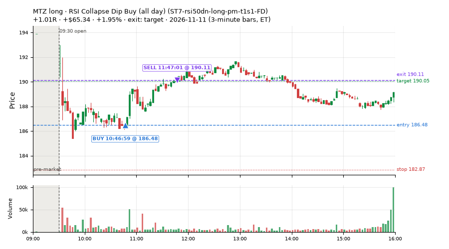
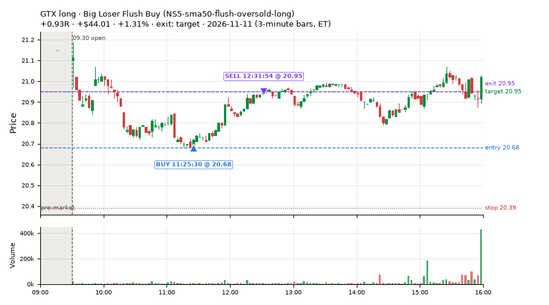
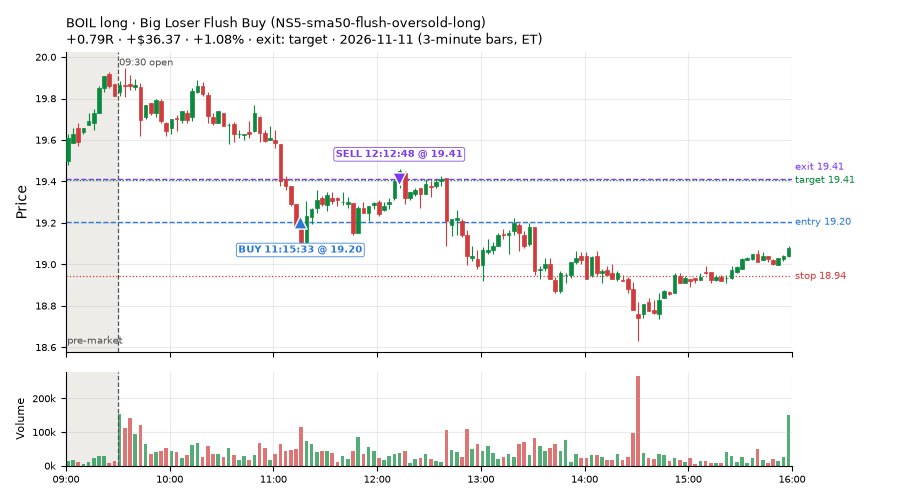
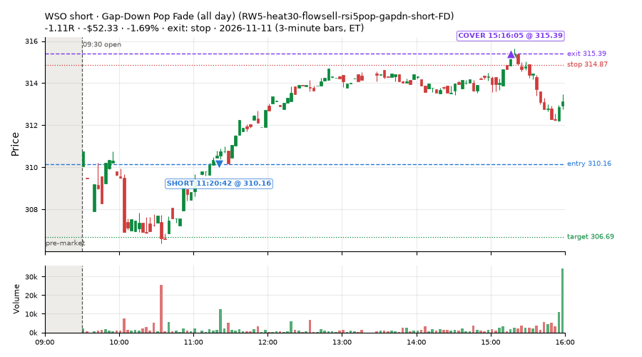
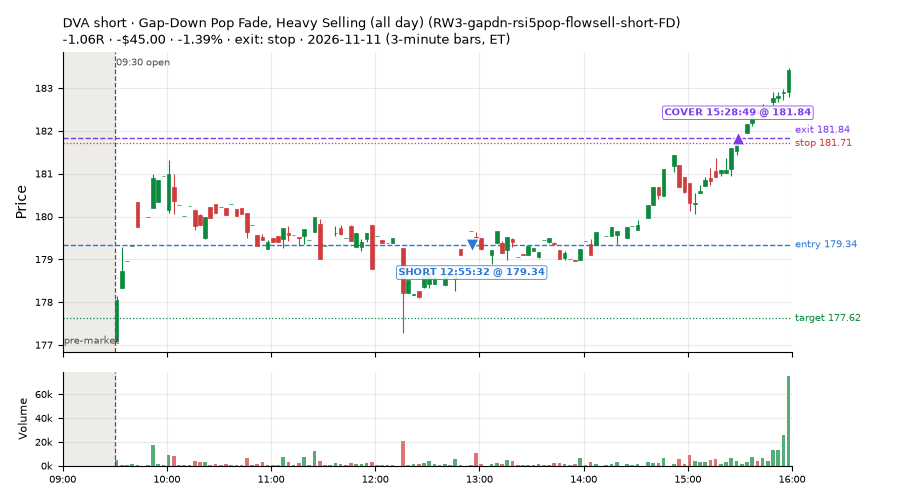
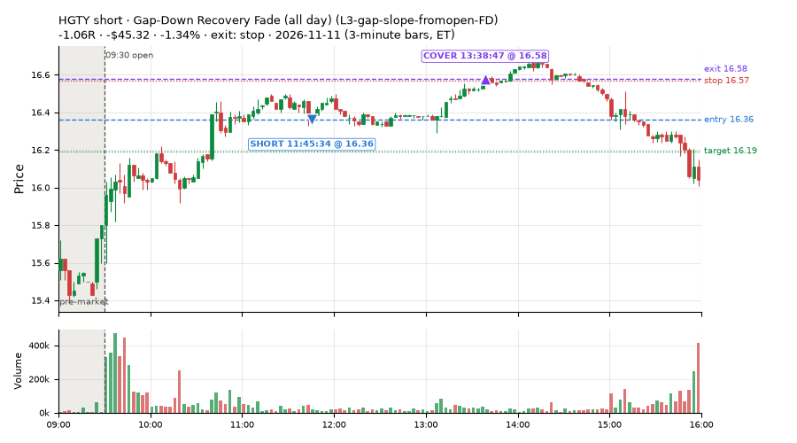
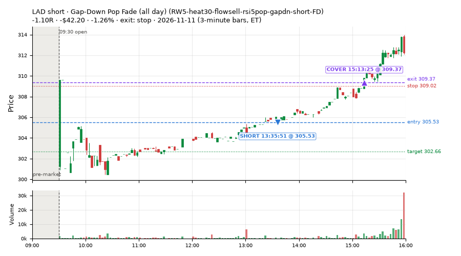
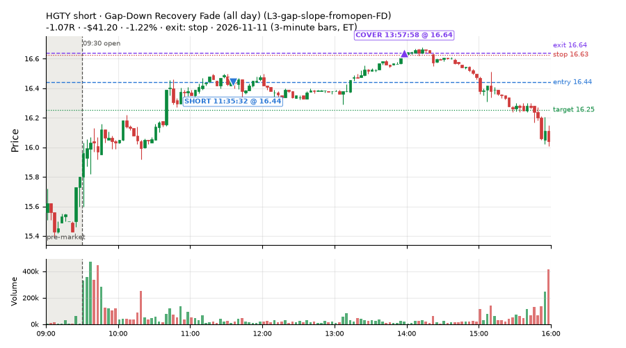

43 trades · win rate 14% · P/L $-670.08
PROBATION: no live setup has passed both locked test periods. 10 owner-directed setups added 2026-10-08 (MarcoFlow top 5 + 5 new), untested live. RW6G1 (RW6 + VWAP band guard) added 2026-10-09, probation.

| Symbol | Setup | Side | In | Out | Entry | Exit | Exit reason | % gained | P/L |
|---|---|---|---|---|---|---|---|---|---|
| MTZ | RSI Collapse Dip Buy (all day) (ST7-rsi50dn-long-pm-t1s1-FD) | long | 10:46 | 11:47 | 186.48 | 190.11 | target | +1.95% | $65.34 |
| GTX | Big Loser Flush Buy (NS5-sma50-flush-oversold-long) | long | 11:25 | 12:31 | 20.68 | 20.95 | target | +1.31% | $44.01 |
| BOIL | Big Loser Flush Buy (NS5-sma50-flush-oversold-long) | long | 11:15 | 12:12 | 19.20 | 19.41 | target | +1.08% | $36.37 |
| Symbol | Setup | Side | In | Out | Entry | Exit | Exit reason | % lost | P/L |
|---|---|---|---|---|---|---|---|---|---|
| WSO | RW5-heat30-flowsell-rsi5pop-gapdn-short-FD | short | 11:20 | 15:16 | 310.16 | 315.39 | stop | -1.69% | $-52.33 |
| DVA | RW3-gapdn-rsi5pop-flowsell-short-FD | short | 12:55 | 15:28 | 179.34 | 181.84 | stop | -1.39% | $-45.00 |
| HGTY | L3-gap-slope-fromopen-FD | short | 11:45 | 13:38 | 16.36 | 16.58 | stop | -1.34% | $-45.32 |
| LAD | RW5-heat30-flowsell-rsi5pop-gapdn-short-FD | short | 13:35 | 15:13 | 305.53 | 309.37 | stop | -1.26% | $-42.20 |
| HGTY | L3-gap-slope-fromopen-FD | short | 11:35 | 13:57 | 16.44 | 16.64 | stop | -1.22% | $-41.20 |








Signal to fill: median 2s, 90th percentile 5s (43 trades). Bars close each minute; the order follows the bar close.
Best excursion (MFE): median 0.21R; worst (MAE) median 0.96R. 51% of trades never got +0.25R in our favour; 1 reached +1R and still closed at or below 0.
| Symbol | Setup | Best R | Worst R | Closed R |
|---|---|---|---|---|
| HNGE | NS5-sma50-flush-oversold-long | +1.03 | -1.00 | -1.00 |
| HGTY | L3-gap-slope-fromopen-FD | +0.90 | -1.04 | -1.07 |
| HGTY | L3-gap-slope-fromopen-FD | +0.80 | -1.02 | -1.07 |
| WEC | RW3-gapdn-rsi5pop-flowsell-short-FD | +0.63 | -0.96 | -0.88 |
| WEC | RW5-heat30-flowsell-rsi5pop-gapdn-short-FD | +0.62 | -0.96 | -0.88 |
| Entry time | Trades | Win | Avg R | P/L |
|---|---|---|---|---|
| 09:50-10:30 | 1 | 0% | -0.52 | $-13.20 |
| 10:30-11:30 | 12 | 33% | -0.39 | $-55.35 |
| 11:30-13:00 | 15 | 13% | -0.77 | $-372.93 |
| 13:00-14:00 | 11 | 0% | -0.69 | $-183.56 |
| 14:00-16:00 | 4 | 0% | -0.40 | $-45.04 |
| Setup | Trades | Win | Avg R | Adj R (net of SPY) | Avg R ex-market (all sessions) | P/L |
|---|---|---|---|---|---|---|
| Gap-Down Recovery Fade (all day) (L3-gap-slope-fromopen-FD) | 3.0 | 0% | -1.07 | -0.79 | -0.02 (beta -1.29, n 66) | $-126.65 |
| Big Loser Flush Buy (NS5-sma50-flush-oversold-long) owner-directed; holdouts once: Sep-Oct -0.008R n73, Apr-Jun +0.002R n231 | 4.0 | 50% | +0.03 | -0.17 | +0.10 (beta +0.67, n 33) | $17.09 |
| Gap-Down Pop Fade, Heavy Selling (all day) (RW3-gapdn-rsi5pop-flowsell-short-FD) | 14.0 | 7% | -0.69 | -0.70 | +0.04 (beta -1.20, n 116) | $-274.32 |
| Gap-Down Pop Fade (all day) (RW5-heat30-flowsell-rsi5pop-gapdn-short-FD) | 21.0 | 10% | -0.68 | -0.81 | +0.00 (beta -1.00, n 143) | $-351.54 |
| RSI Collapse Dip Buy (all day) (ST7-rsi50dn-long-pm-t1s1-FD) | 1.0 | 100% | +1.01 | +0.84 | +0.26 (beta +0.26, n 22) | $65.34 |
Market direction (SPY, beta 1) accounted for $65.73 of today's $-670.08; the rest ($-735.81) came from the setups themselves. Avg R net of SPY: -0.67 (incl. a hedge leg's cost; report only).
6 setups live today. Today: 86 signals, 43 taken, 2 lost because another setup held the symbol (2%). Since 2026-10-06 (27 sessions): 3740 signals, 1147 taken, 172 lost to other setups (5%). Peak open positions today 35 of 77 slots. Earnings blackout removed 924 symbols before scanning.
Simulated playing time (not live): 2570 what-if trades of signals not taken, avg -0.06R, 52% winners; of them 172 lost to another setup (avg -0.18R).
Silent: intraday_momentum · Crowded out: MF4-h40-open-flowsell, MF3-open-flowsell-rsi5hi, MF5-flowsell-vwapup-rsi5hi · Starved: MF2-open-rsimidhi-flowsell
| Prio | Setup | Today sig / taken | Sessions | Signals / taken / trades | Taken/day | Expected/day | Lost to other setups | Lost to (setup n) | Top skip reasons | SIMULATED: not-taken n / avg R / win | Verdict |
|---|---|---|---|---|---|---|---|---|---|---|---|
| 1 | Late-Day ETF Dip Buy (near-miss) NM-ETF-late-dip-di-long | 0 / 0 | 1 | 0 / 0 / 0 | 0.00 | – | 0 | – | – | 0 / – | quiet - wait no signals in 1 session(s); too early to tell |
| 2 | Gap-Down Pop Fade (all day) RW5-heat30-flowsell-rsi5pop-gapdn-short-FD | 25 / 21 | 19 | 205 / 143 / 143 | 7.53 | 12.79 | 0 | – | daily loss cap 21, spread / quote / size 21, not shortable / shorts off 20 | 62 / -0.14R / 40% | ok 37.6 entries/week |
| 3 | Gap-Down Pop Fade, Heavy Selling (all day) RW3-gapdn-rsi5pop-flowsell-short-FD | 16 / 14 | 19 | 207 / 116 / 116 | 6.11 | 13.59 | 1 | CWT14-failbrk-pdl-p10-lowvol-long 1 | daily loss cap 33, not shortable / shorts off 32, spread / quote / size 25 | 91 / +0.10R / 56% | ok 30.5 entries/week |
| 4 | RSI Collapse Dip Buy (all day) ST7-rsi50dn-long-pm-t1s1-FD | 1 / 1 | 13 | 43 / 22 / 22 | 1.69 | 2.17 | 0 | – | spread / quote / size 19, daily loss cap 2 | 21 / +0.21R / 57% | slow 8.5 entries/week; ~7 weeks to 60 trades |
| 5 | Gap-Down Recovery Fade (all day) L3-gap-slope-fromopen-FD | 40 / 3 | 11 | 1388 / 66 / 66 | 6.00 | – | 33 | L3-gap-slope-fromopen-FD 33, L3-gap-slope-rsi5hi-FD 14 | not shortable / shorts off 1144, daily loss cap 106, spread / quote / size 38 | 1319 / -0.07R / 49% | ok 30.0 entries/week |
| 6 | Big Loser Flush Buy NS5-sma50-flush-oversold-long | 4 / 4 | 25 | 50 / 33 / 33 | 1.32 | 2.41 | 0 | – | daily loss cap 13, spread / quote / size 4 | 17 / +0.04R / 53% | slow 6.6 entries/week; ~9 weeks to 60 trades |
Every trade is attached as a CSV you can open and edit in Excel or Google Sheets. Live page: https://misiti15.github.io/MCF/live/